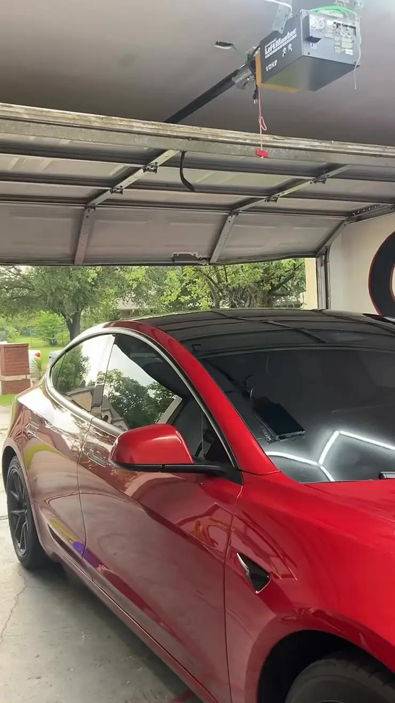
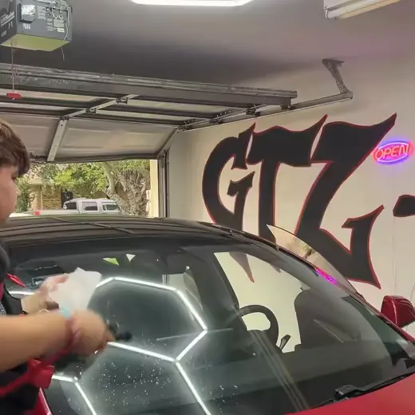
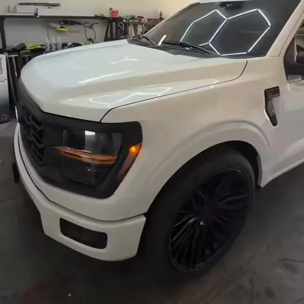
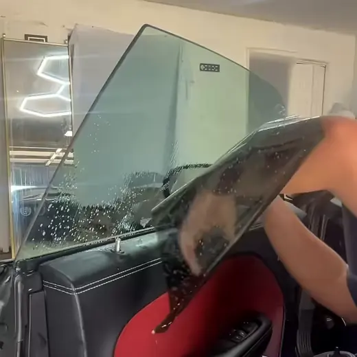
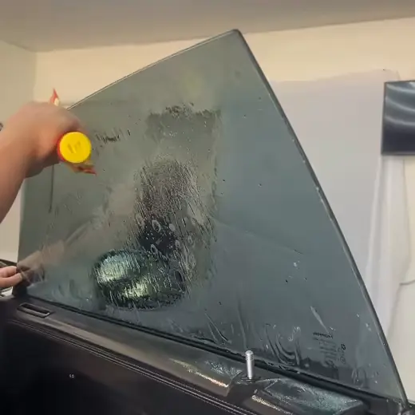
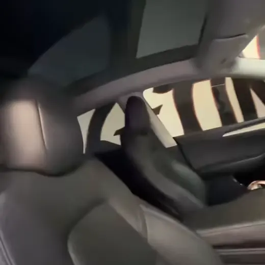
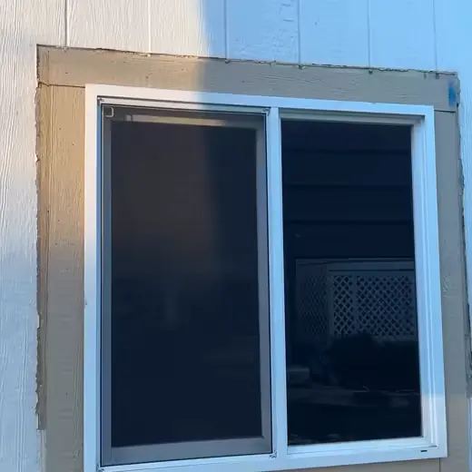

Fort Worth, Texas · 100°+ summer days
TEXAS
DOESN'T
NEGOTIATE.
So we bring film. Ceramic XR, cut and laid one pass at a time — automotive, residential and commercial.
THIS IS
THE FILM.
Nano-ceramic. No metal in it, so your signal, GPS and toll tag don't care that it's there.
ONE
PASS.
No creases. No bubbles. No light gap at the edge. The part nobody photographs is the part that takes years to learn.
THE SUN STOPS
AT THE GLASS.
Your dash stops cooking. Your seats stop fading. Your A/C stops fighting a losing war at every red light.
The work
SIX JOBS.
ONE SET OF HANDS.
Every one of these is ours — shot in our own bay, under our own lights.






Ceramic XR
WHAT YOU'RE
ACTUALLY BUYING.
-
01
The heat stops outside
Ceramic film works on infrared — the part of sunlight you feel as heat. It is why a tinted cabin stops being an oven ten minutes after you park it in a grocery lot in August.
-
02
Your interior stops dying
UV is what cracks a dash, bleaches a black seat grey and turns red leather pink. Quality film blocks the overwhelming majority of it. The Challenger above is the reason people book this the week they buy the car.
-
03
Nobody sees your things
Privacy is the one everybody asks for and the easiest to get right. Laptop on the seat, tools in the back, kid in a car seat — none of it is a window display any more.
-
04
No metal, no dead signal
Older metallized films could interfere with what your car is trying to receive. Nano-ceramic has no metal in it, so your phone, GPS, radio and toll tag carry on as normal.
Shades
HOW DARK
DO YOU WANT IT?
VLT is how much light gets through. Lower number, darker glass. Here is the honest version — including where Texas draws the line.
Almost invisible. Bought purely for heat and UV — popular on windshields.
Legal on front sidesA slight cast. Cuts glare without changing how the car looks.
Legal on front sidesClearly tinted, still easy to see out of at night. This is what most people picture.
Legal on front sidesProper privacy. You can make out shapes, not faces.
Rear glass onlyWhat went on the Tesla sunroof. Serious heat and privacy.
Rear glass onlyYou are not seeing in. Night driving takes some getting used to.
Rear glass onlyBefore you pick a number
WHAT'S LEGAL
IN TEXAS.
Plenty of shops will put whatever you ask for on the front doors and let you find out at a traffic stop. Here is the actual rule, so you can choose with your eyes open.
- Front side windows
- Must let more than 25% of light through. That rules out 20%, 15% and 5% on the two front doors.
- Windshield
- Tint is allowed above the AS-1 line — the marking a few inches down from the top of the glass. A high-VLT ceramic over the full windshield is the usual way to get heat rejection without breaking that rule.
- Rear sides & back glass
- Any darkness, as long as the vehicle has dual outside mirrors. This is where 20%, 15% and 5% belong.
- Medical exemption
- Texas allows darker front glass with a signed exemption from a licensed physician, for conditions made worse by sunlight.
Summarised from Texas Transportation Code §547.613 and Texas DPS guidance, current as of 2026. This is a plain-English summary, not legal advice — and GTZ will walk you through it before anything gets cut.
Tinter Battles 2026
WE COMPETE
AGAINST PEOPLE
WHO DO THIS
FOR A LIVING.
Timed installs, a crowd, and judges walking the glass looking for the one gap you left. We went — one of the youngest names on that stage — then came straight back and kept working out of the same bay.
Your car is not a competition. It just gets the hands that trained for one.
Automotive
Cars, trucks, Teslas, fleet. Full vehicle, two fronts, a brow strip, a windshield — or fixing whatever the last guy did.
Residential
West-facing rooms that are unusable by 4pm. Lower bills, less glare on the TV, and neighbours who cannot see your living room.
Commercial
Storefronts and offices — heat load, glare on screens, and privacy at street level.
Book it
TELL US WHAT
YOU'RE DRIVING.
Text or call with your year, make and model, and what you are after — heat, privacy, or both. We'll tell you what's legal, what it costs, and when we can take it. Hablamos Español.
- WhereFort Worth, Texas — by appointment
- FilmCeramic XR
- CoversAutomotive · Residential · Commercial
- IdiomasEnglish & Español